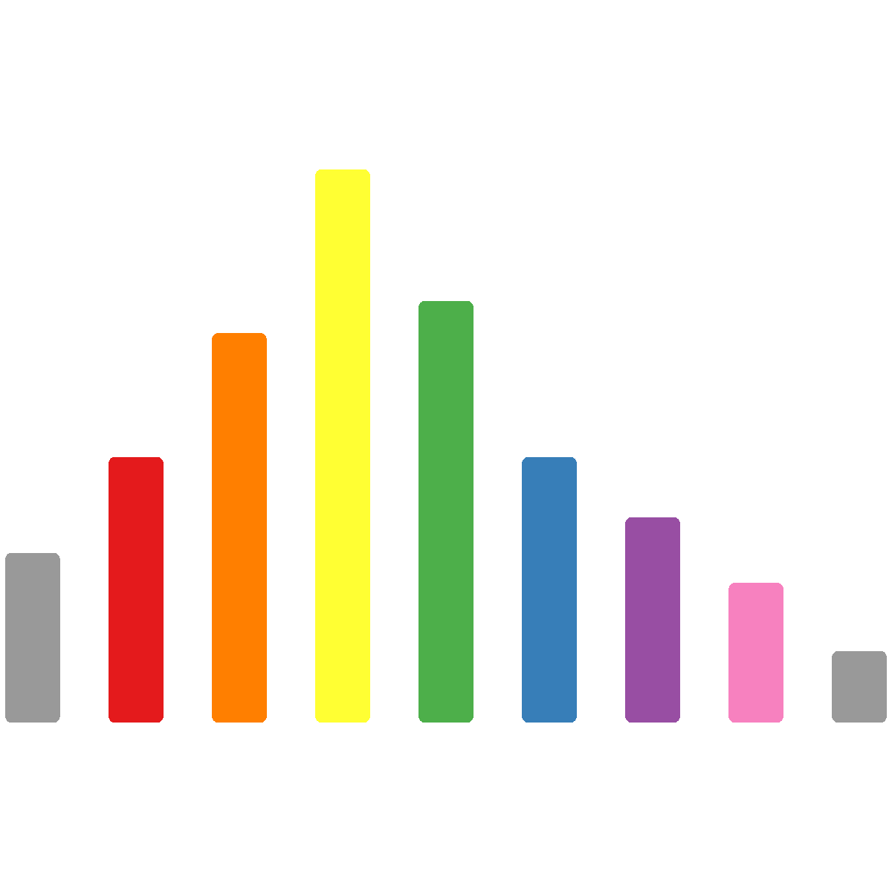

Chapter 10 ASV taxonomic assignment

Now that we have defined the sequence variants in the samples, we can assign taxonomic labels to them. Here, we use the sk-learn classifier to assign taxonomy based on the Greengenes database (DeSantis et al., 2006).
Greengenes is a database containing quality-controlled microbial sequence data. Greengenes 16S rDNA sequences come from a large number of species which have been formatted for use in QIIME, by clustering the sequences at a given level of similarity (here, 99%). As for OTU-picking, the more stringent the similarity threshold, the more fine-grained the taxonomic designation (i.e. there are more Greengenes OTUs defined to the species level at 99% than at 97% similarity). The classifier maps the variant sequences to OTU representative sequences from the Greengenes set.
10.1 Import taxonomy database

First, we need to import the Greengenes data into QIIME2 artifacts. These steps will create two objects containing the sequences and their taxonomy, respectively.
qiime tools import --input-path \
/pub39/tea/matthew/NEOF/16s_workshop/chapter_10/gg_13_8_otus/rep_set/99_otus.fasta \
--output-path gg-13-8.99_otus.qza \
--type 'FeatureData[Sequence]'
qiime tools import --input-path \
/pub39/tea/matthew/NEOF/16s_workshop/chapter_10/gg_13_8_otus/taxonomy/99_otu_taxonomy.txt \
--output-path gg-13-8.99.taxa.qza \
--input-format HeaderlessTSVTaxonomyFormat \
--type 'FeatureData[Taxonomy]'10.2 Extract 16s region of interest
We require a classifier training step to reach optimum assignment performance.
Prior to training we will extract our 16S region of interest. This is carried out by using the amplicon primer sequences.
Note: Do not run the below command for this tutorial, see below command.
qiime feature-classifier extract-reads \
--i-sequences gg-13-8.99_otus.qza \
--p-f-primer NNNNNGTGCCAGCMGCCGCGGTAA \
--p-r-primer GGACTACHVGGGTWTCTAAT \
# Creating reads of 250 bp as our intial read length was 250bp
--p-trunc-len 250 \
--o-reads gg-13-8.99.ref.seqs.qzaGiven that the above command may require more than 14h to finish, we won’t be able to run it on this occasion. Copy over the premade results with the following command:
cp /pub39/tea/matthew/NEOF/16s_workshop/chapter_10/gg-13-8.99.ref.seqs.qza .10.3 Classifier training

Now we train the classifier on this set of extracted reads (approx. 25 mins):
qiime feature-classifier fit-classifier-naive-bayes \
--i-reference-reads gg-13-8.99.ref.seqs.qza \
--i-reference-taxonomy gg-13-8.99.taxa.qza \
--o-classifier classifier.trained.qza10.4 Taxonomy assignment
With our trained classifier we can assign taxonomic assignments to the ASV representative sequences:
qiime feature-classifier classify-sklearn \
--i-classifier classifier.trained.qza \
# Default value for confidence
--p-confidence 0.7 \
--i-reads rep-seqs-dada2.qza \
--o-classification taxonomy.sklearn.qza10.5 Taxonomy bar chart production

Create a taxonomy-abundance bar-chart visualisation artifact:
qiime taxa barplot --i-table table-dada2.qza \
--i-taxonomy taxonomy.sklearn.qza \
--m-metadata-file metadata.file.txt \
--o-visualization taxa-bar-plots.dada2.qzvThe visualisation consists of an interactive taxonomy bar chart. You can specify the taxonomic level to look at, as well as a few sorting and colouring options. Experiment with it and then answer the below questions.
Questions:
- What is the most abundant taxon, at taxonomic level 5, in the dataset (note: taxa are ordered form most to least abundant in the legend)?
- How do the samples compare to each other?
If you have sequenced any samples with known composition (e.g. mock community), now is the time to see if they behave as expected, you may want to change some steps and/or settings of what you have done so far if the composition does not match what you expect. For example, change the de-noising tool or apply more quality filters to further improve the quality of the sequence under examination.